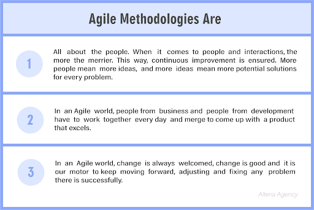

Understanding Agile Methodologies and how they facilitate software development
May 29, 2022
Once upon a time, in a land far far away, a group of software engineers and business connoisseurs gathered together. They were all united by the same call: to find a new way of doing things, a way that would lead them to success while they spent less money and time to get excellent results.
It was then when they created the most revolutionary and talked about methodologies of all time: The Agile Methodologiess
In this article, we’re going to explain:
- What are Agile Methodologies
- How Agile is used in software development to make software production more efficient
What is Agile?
Agile is a philosophy that refers to the ability to react to change so that continuous improvement isn’t affected. Put simply, Agile is the capacity of a system (it could be any system, even a team of people) to be flexible enough to face change and still produce good results.
The term first originated in 1700. It was born from the necessity of several businesses to respond to demand changes effectively without having to lose time, or money trying to keep up with these changes.
Agile Manifesto and Principles
One of the main principles of Agile is prioritizing people and interactions over processes and tools, which means that in an Agile environment, multiple source collaboration and idea interchange is fundamental.
In an Agile world, collaboration means solving problems faster, getting better organized, and ensuring continuous improvement over time. In addition to this, Agile nibbles a giant problem into little pieces so it's easier to tackle.
Working with an Agile mindset helps to prevent problems from worsening as time passes because it takes a project and distributes it into sprints so that on each sprint work can be audited and corrected before potential problems increase.
The principles of Agile are listed in a document called “Agile Manifesto”, and they are the guidelines of any Agile Methodology or Agile Environment.
Because we know that remembering all 12 can be challenging, let’s instead just extract the main parts to build a conclusion of what Agile Methodologies are:
How do Agile methodologies facilitate software production?

When using Agile Methodologies, any business can find their teams more organized and productive, but this emphasizes in the case of the Tech Industry.
It is no secret that when developing software, there are always errors or inconsistencies that can arise at any given point of the software development project. In addition, in a software project, there are always several people involved, who need to communicate as effectively as possible, otherwise, the results are not going to be the best.
In every software development team, there are always three types of people: Software developers, QA engineers, and business people. The first ones are in charge of developing and deploying code, the second ones are in charge of ensuring the product is achieving quality requirements (like compliance), and the last ones want are the ones who know who will use the software and how it can sell more.
Agile Methodologies facilitate the communication between these parts to improve the overall performance of the project.
Now, can anyone have an Agile team or implement Agile methodologies in their business?
The benefits of Agile Methodology implementation include
- Improving teamwork
- Improving communication among the members of all teams
- Increasing productivity
- Increasing processes efficiency
- Offering high-quality products
- Reducing costs
It promotes teamwork, and continues collaboration and communication. It also helps increase productivity since all the members of the team are constantly on the same page, which later on translates into more efficient processes and therefore, higher quality products at a lower cost of production.
However, it is important to note that Agile Methodology implementation requires team training, and this takes time and money.
You can consistently implement an Agile working environment as long as your team is fully aware of how the Agile Methodology works, but if not, it is always absolutely worth it to invest in bringing knowledge about Agile to your company.
If you want to know a little bit more about Agile Methodology implementation, we suggest you read “The Agile Project Management Guide” by Adobe. It is a great way to get introduced to the world of Agile Methodology implementation and see the benefits of an Agile Environment.
We hope this article has been helpful and useful.
If you want to know more about implementing Agile, don’t forget to check out our other articles on related themes:
- What is DevOps, and is it suitable for your project?
- What is a Fractional CTO and why does your business might be needing one